| |

DejaVu Review

For todays review, we're going back in time and reviewing DejaVu at Six Flags Magic Mountain. It spent some time at Six Flags New England for a couple years afterwards, but it ultimately left that park as well and died. I may not have been able to ride it there, but I did get some photos of it at SFNE which'll be shown down below. Now this is a real shame as these rides really kick ass and are SO MUCH BETTER than your standard Boomerang. They truly are really underrated. Also, hearing about how Six Flags New England just totally butchered and ruined this ride and then just killed it really upsets me since....they are great rides. But anyways, let's ride it as it was at Six Flags Magic Mountain. After getting in the funky V-shaped trains, fastening the orange seatbelt and pulling down the shoulder harness that smells like sharpies, you are released. As you are climbing up the lifthill, you start to slide out of you're seat. For the first time, your life is dependent on that sharpie smelling shoulder harness (At least it feels like the first time). Because if that shoulder harness fails, you'll go SPLAT! Right onto the ground. After you've been hanging there, you drop. With the ground just flying towards our faces, you just have to enjoy the rush as you swoop down and laugh at the people waiting in line. After your brief second in the station, you swoop up into a giant cobra roll. You go head over heels twice and then soar into a magnificent vertical loop. The inversions on this boomerang are much smoother than on most Boomerangs. And then you fly up the second spike, you roar 3/4 of the way up when you suddenly catch a cable. As you slowly climb to your doom, you can get a decent view of Six Flags Magic Mountain, then you drop. As the sky gets smaller and smaller, we fall and fall until we swoop down and do it all BACKWARDS!!! After tackling the loop and cobra roll backwards, you fly back up the first spike, and while it appears we're going again, the cable car brings us back to earth. As far as I'm concenered, these are BY FAR the best type of Boomerang you can get. The Vertical Lifts are just unbeliveably awsome. If you have a chance to get on a Giant Inverted Boomerang, TAKE IT!!! Go to Silverwood and get on this ride! There are also clones of this avaliable in Spain, China, and Russia.
8/10
Opened at Six Flags Magic Mountain in 2001
Moved to Six Flags New England in 2012
Died at the end of the 2021 Season
Built by: Vekoma
Last Ridden: September 4, 2011
I have ridden this exact same ride at the following parks.
Silverwood
Goliath Photos

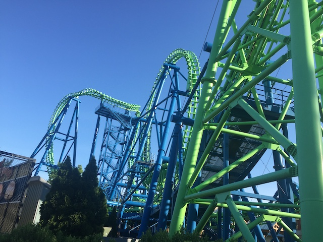

DejaVu Photos
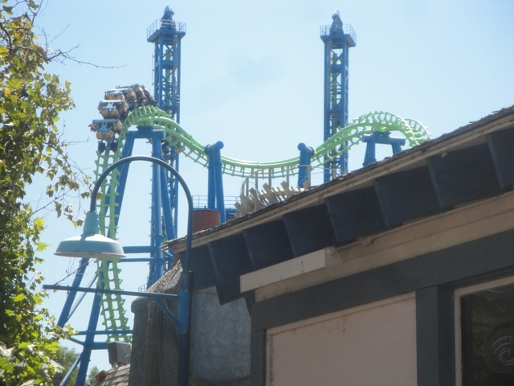
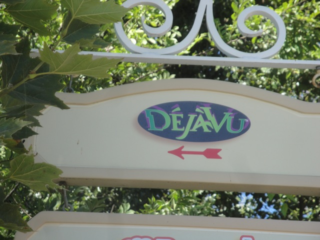

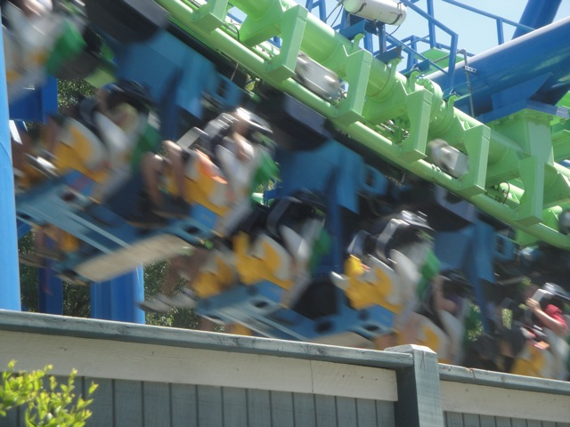
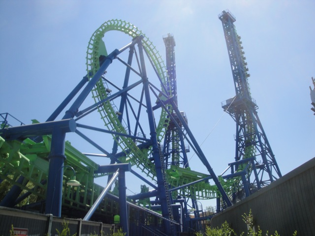
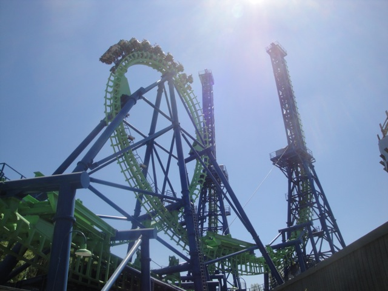
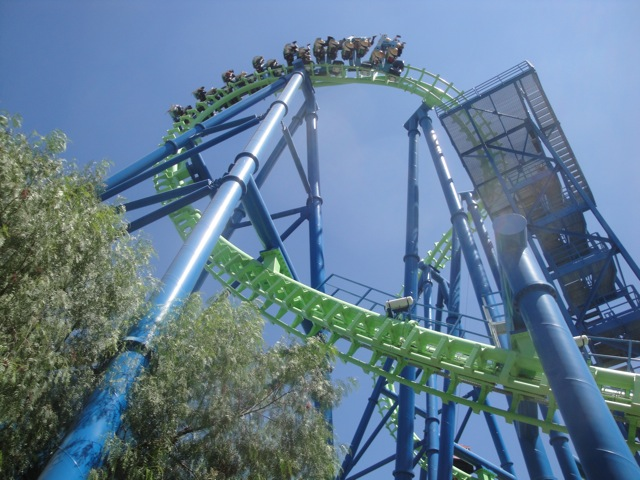
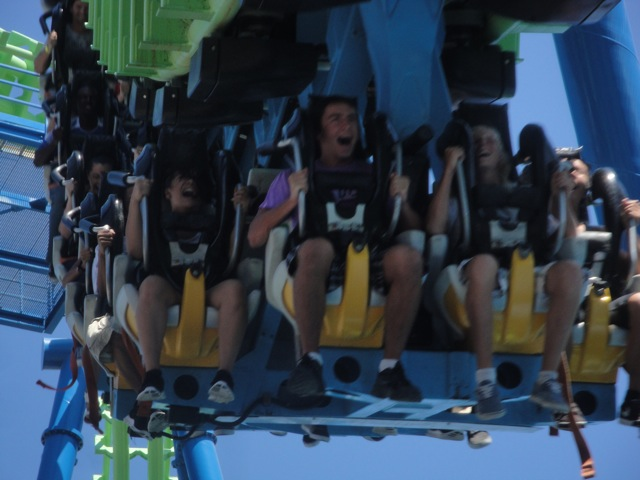
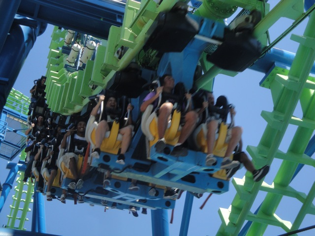
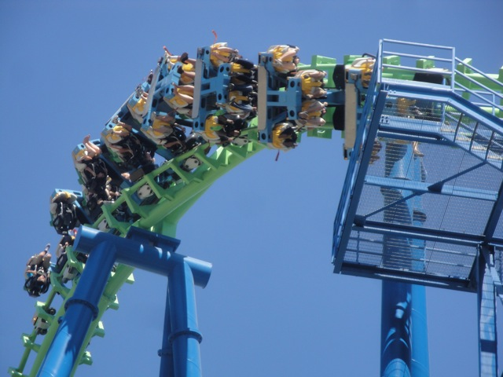
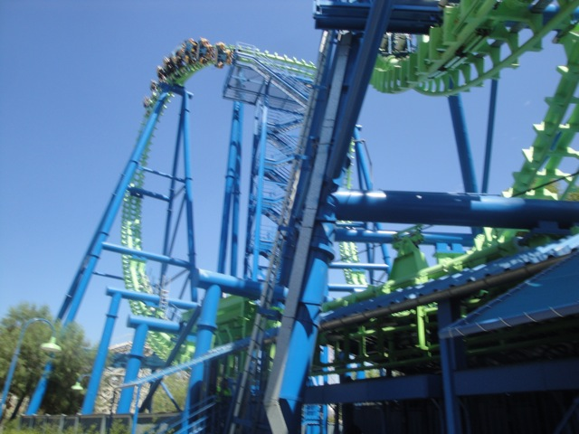


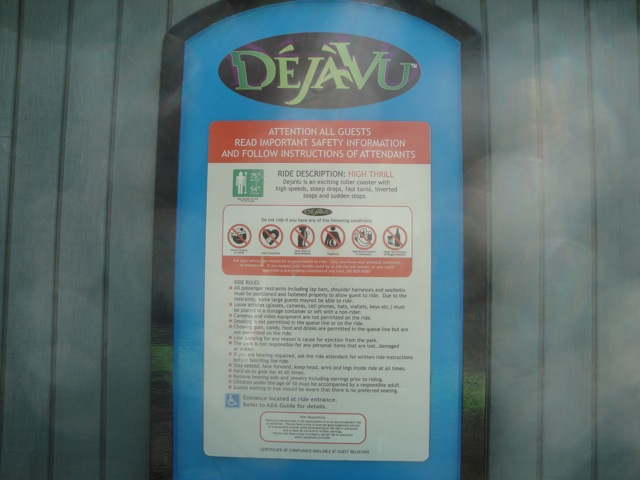

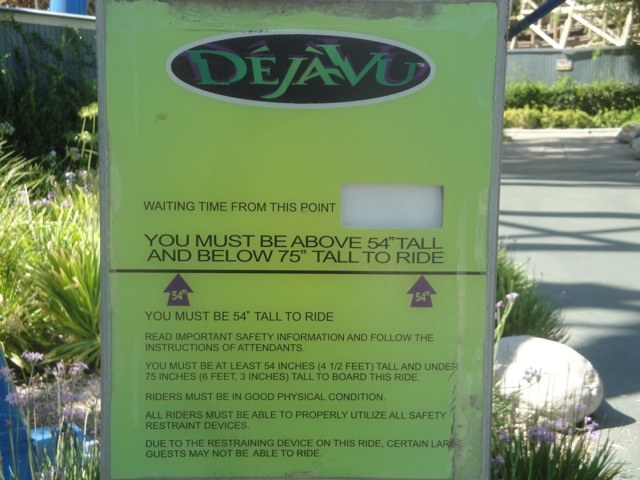


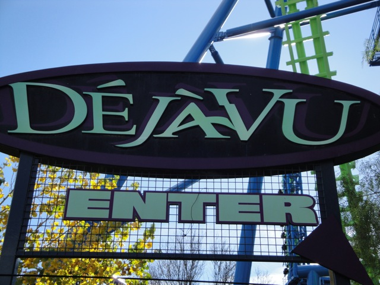


Home
|